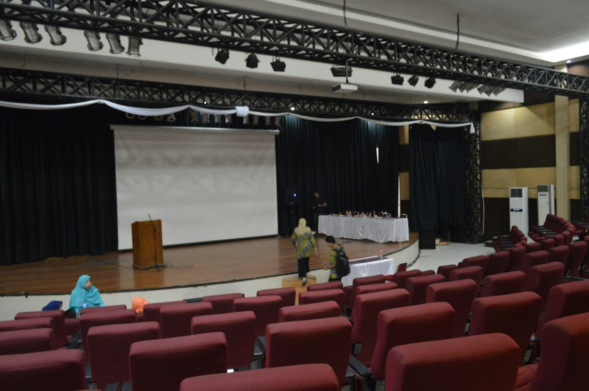
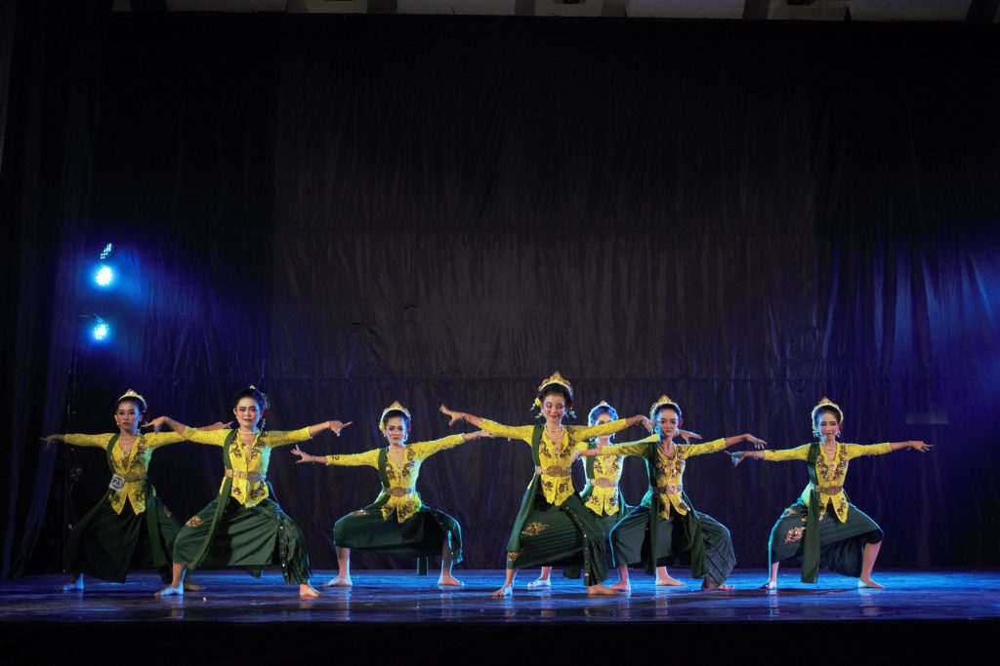
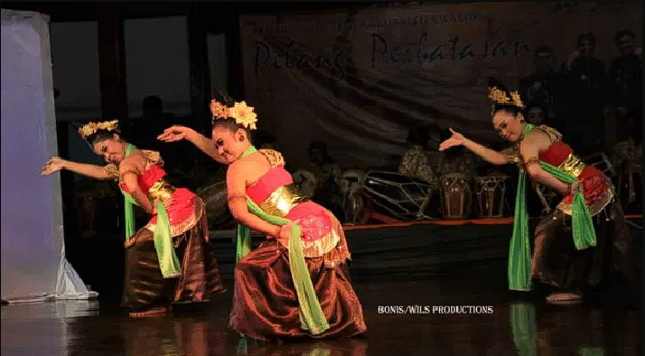
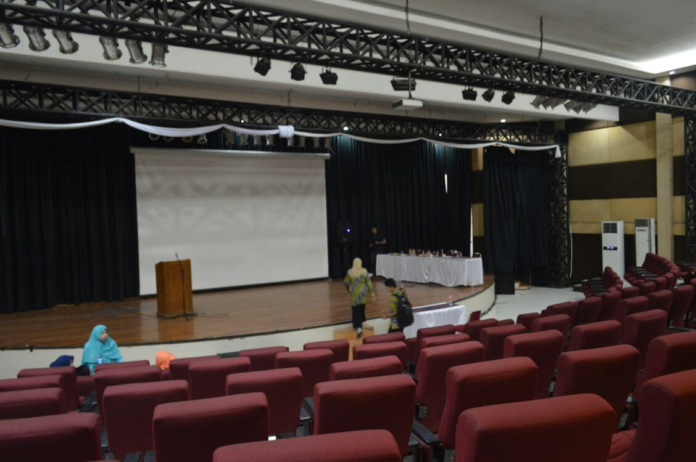
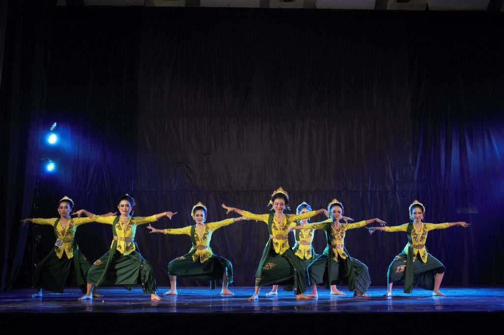
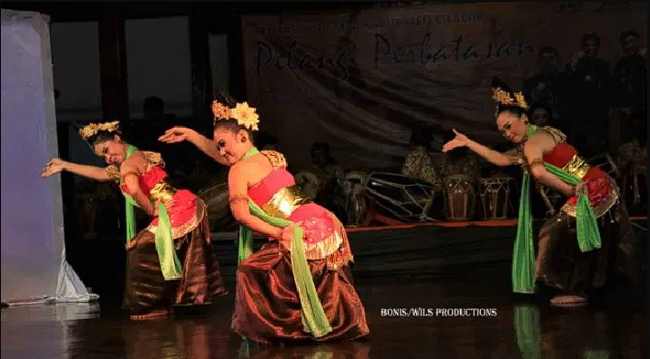

Penampilan Jaipong
pendahuluan
Tari Jaipong merupakan tarian tradisional yang berasal dari Jawa Barat, tepatnya di wilayah Pasundan. Tari Jaipong terinspirasi dari Tari Ketuk Tilu dan dikombinasikan dengan jenis tarian lain, seperti pencak silat dan Tari Tayuban. Perpaduan gerakan-gerakan tersebut melahirkan tarian baru yang diberi nama Tari Jaipong.
 





Tujuan
Acara ini diadakan untuk melestarikan budaya daerah sekaligus memahami lebih dalam tentang tari jaipong Melalui pertunjukan dan workshop tari Jaipong, peserta juga diharapkan dapat mengenal lebih dalam filosofi di balik gerakan-gerakan tari ini, sehingga mereka tidak hanya sekadar menikmati seni tari, tetapi juga memahami nilai-nilai sejarah dan sosial yang terkandung di dalamnya. Dengan demikian, acara ini berfungsi sebagai jembatan antara budaya masa lalu dan masa kini, serta sebagai bentuk apresiasi terhadap keanekaragaman budaya Indonesia.